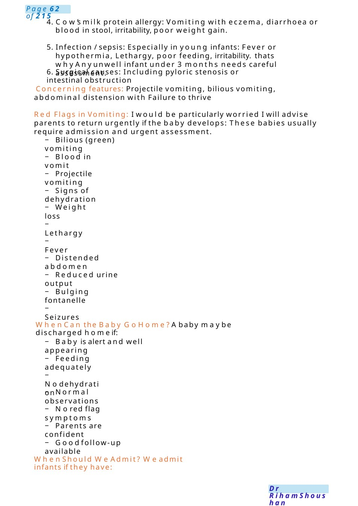
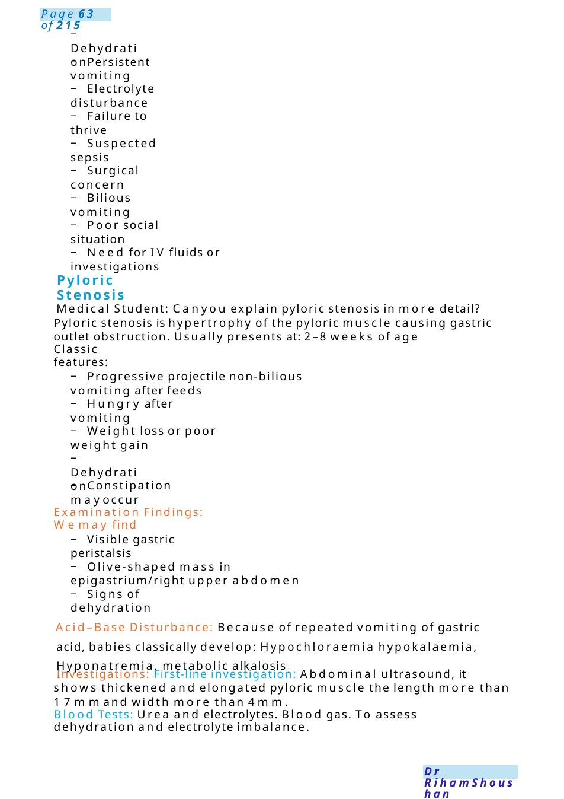
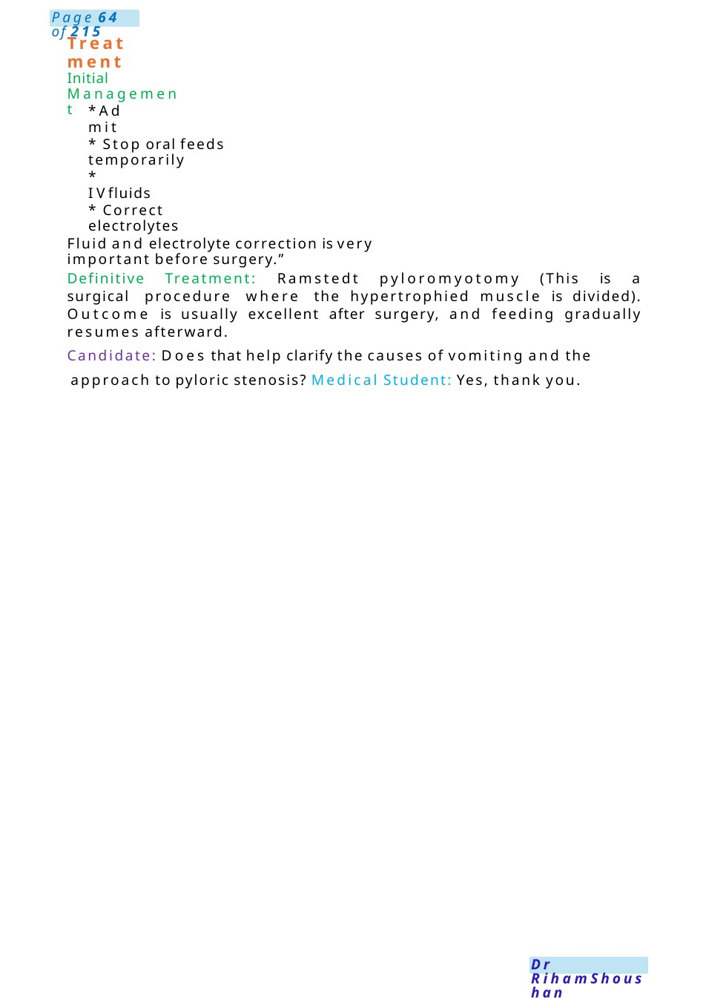

Causes of Vomiting to Medical Student
MRCPCHCommunication Scenario with Medical Student Asking About Vomiting in a 3-Month-Old Infant Setting: Paediatric ward round / teaching discussion
Scenario Summary
MRCPCHCommunication Scenario with Medical Student Asking About Vomiting in a 3-Month-Old Infant Setting: Paediatric ward round / teaching discussion
Full Original Scenario

Causes of Vomiting to Medical Student
MRCPCHCommunication Scenario with Medical Student Asking About Vomiting in a 3-Month-Old Infant
Setting: Paediatric ward round / teaching discussion
Candidate Role: Junior doctor / paediatric trainee
Role Player: Medical student
Candidate: Goodmorning Dr., i amDR. I think wehave met before in the rounds. Nice to see e you today. I have amazing feedback about you that you always keen with your patients and seeking for information.
Medical Student: Doctor, can youexplain the commoncauses of vomiting in a 3-month-old baby, and howwedecide whocan go homeand whoneeds admission?”
Candidate: Of course. Vomiting is very commonin young infants, and causes range from harmless reflux to surgical emergencies. The first thing is to distinguish: Simple posseting or reflux, true vomiting, Andbilious or projectile vomiting, which are more concerning.”
Causes of Vomiting in a 3-Month-Old Infant
1. Gastro-oesophageal reflux (most common)Small frequent milk regurgitation. Baby otherwise well. Feeding normally. Gaining weight with Nodehydration. Many infants have immature lower oesophageal sphincters, so milk comes back easily.”
2. Gastroenteritis. Weassess hydration carefully because infants dehydrate quickly.”
3. Overfeeding: Vomiting after large feed. Otherwise, healthy infant.

4. Cow’s milk protein allergy: Vomiting with eczema, diarrhoea or blood in stool, irritability, poor weight gain.
5. Infection / sepsis: Especially in young infants: Fever or hypothermia, Lethargy, poor feeding, irritability. thats why Anyunwell infant under 3 months needs careful assessment.
6. Surgical causes: Including pyloric stenosis or intestinal obstruction
Concerning features: Projectile vomiting, bilious vomiting, abdominal distension with Failure to thrive
Red Flags in Vomiting: I would be particularly worried I will advise parents to return urgently if the baby develops: These babies usually require admission and urgent assessment.
− Bilious (green) vomiting
− Blood in vomit
− Projectile vomiting
− Signs of dehydration
− Weight loss
− Lethargy
− Fever
− Distended abdomen
− Reduced urine output
− Bulging fontanelle
− Seizures
When Can the Baby Go Home?Ababy maybe discharged homeif:
− Baby is alert and well appearing
− Feeding adequately
− Nodehydration
− Normal observations
− Nored flag symptoms
− Parents are confident
− Goodfollow-up available
When Should We Admit? Weadmit infants if they have:

− Dehydration
− Persistent vomiting
− Electrolyte disturbance
− Failure to thrive
− Suspected sepsis
− Surgical concern
− Bilious vomiting
− Poor social situation
− Need for IV fluids or investigations
Pyloric Stenosis
Medical Student: Canyou explain pyloric stenosis in more detail? Pyloric stenosis is hypertrophy of the pyloric muscle causing gastric outlet obstruction. Usually presents at: 2–8 weeks of age
Classic features:
− Progressive projectile non-bilious vomiting after feeds
− Hungry after vomiting
− Weight loss or poor weight gain
− Dehydration
− Constipation mayoccur
Examination Findings: Wemay find
− Visible gastric peristalsis
− Olive-shaped mass in epigastrium/right upper abdomen
− Signs of dehydration
Acid–Base Disturbance: Because of repeated vomiting of gastric acid, babies classically develop: Hypochloraemia hypokalaemia, Hyponatremia, metabolic alkalosis
Investigations: First-line investigation: Abdominal ultrasound, it shows thickened and elongated pyloric muscle the length more than 17mmand width more than 4mm.
Blood Tests: Urea and electrolytes. Blood gas. To assess dehydration and electrolyte imbalance.

Treatment
Initial Management
- Admit
- Stop oral feeds temporarily
- IVfluids
- Correct electrolytes
Fluid and electrolyte correction is very important before surgery.”
Definitive Treatment: Ramstedt pyloromyotomy (This is a surgical procedure where the hypertrophied muscle is divided). Outcome is usually excellent after surgery, and feeding gradually resumes afterward.
Candidate: Does that help clarify the causes of vomiting and the approach to pyloric stenosis? Medical Student: Yes, thank you.

Functional Abdominal Pain
Explanation: Functional abdominal pain (FAP)is commonin children or teenagers. Theaverage prevalence is at least 13%(some studies suggest it affects 30%of school-aged children). The word functional means that there is nophysical blockage, infection, inflammation or disease causing the pain.
Symptoms: Children with FAPcomplain of recurrent tummypain, usually around their belly button, which goes on for at least three months. Other gastrointestinal (tummyand bowel) symptoms such as being sick (vomiting), constipation and diarrhoea are also commonwith functional abdominal pain. Children with functional abdominal pain can also get other pains in their body, such as headaches. Abdominal pain in a child can lead to increased anxiety and can affect family life, school life and a child’s daily activities. However, children with functional abdominal pain disorders tend to be otherwise healthy and develop as normal. They have no other signs of serious illness, such as fever, weight loss, persistent vomiting or blood in their poo.
Causes: usually the reason is unknown, and this is considered a wayfor the body to showhis stresses &feeling of anxiety. It is important to understand that functional abdominal pain disorders are not caused by inflammation, infection or a structural abnormality in the gut. The pain is not caused by a problem with the body itself, but with howthe body is functioning.
There are things that can increase the chance of a child getting a functional abdominal pain disorder. AFamily history of similar disorders, such as IBS.
Our bodies’ natural (‘fight or flight’) response to stress and anxiety can affect the gut. These changes can makethe pain worse.
Watching electronics, eating sugary food or juice and bad eating habits.
Somechildren whohave had difficulties growing up, such as a trauma, adversity, or bereavement, are also more likely to get a functional abdominal pain disorder later in life.
Other psychological difficulties, such as depression, can increase the risk of functional abdominal pain disorders.
Food allergies and intolerances do not necessarily cause functional abdominal pain disorders. Investigations: no need.
Treatment: symptomscan improve over time. Thegoal of any treatment is to ease symptomsand help your child get back to their usual daily activities.
Reassurance and relaxation as these disorders are caused by oversensitive brain gut communication, getting your child to develop their own relaxation strategies can help to calm the body and reduce symptoms.
Poor sleep can make symptoms worse. If sleep is an issue for your child, try to help them improve their sleep patterns. Byhugging him, giving him muchtime and support.
Regular physical exercise can ease symptoms, by improving bowel function and helping to lower general stress levels.